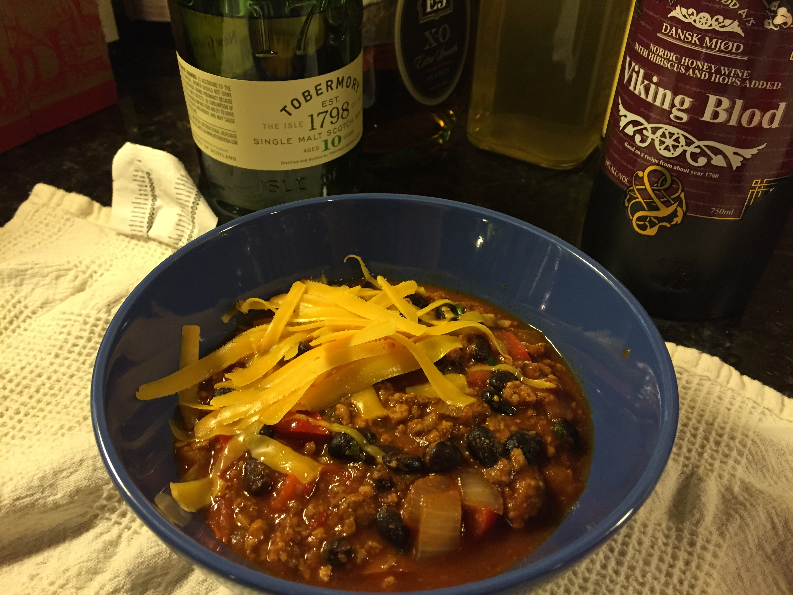

Pork Beef and Black Bean Chili
Blurb
A southwestern style red chili. Basically a thick meat paste with vegetables.
Source
Borrowed with love from Epicurious
Ingredients
- Vegetables
- 3 cups (675 g) diced fresh tomatoes
- 3 cups (675 g) diced onions
- 3 cups (675 g) diced red bell peppers
- 6 garlic cloves, minced
- 3 6-ounce cans tomato paste
- 3 cups canned black beans, drained, rinsed (from three 15-ounce cans)
- 1 cup (20 g)chopped fresh cilantro
- Spices
- 2 tablespoons ground cumin
- 2 tablespoons chili powder
- 2 teaspoons dried oregano
- 2 teaspoons salt
- 1 teaspoon cayenne pepper
- 2 teaspoons sugar
- Proteins
- 1 pound ground pork
- 1 pound ground beef
- 1 pound chuck steak, fat trimmed, cut into 1-inch cubes
- Liquids
- 2 tablespoons olive oil
- 2 cups water
- 2 3/4 cups (about) beef broth
- Garnish
- Grated cheddar cheese
Steps
- Heat olive oil in heavy large pot over medium-high heat.
- Add ground pork and ground beef and sauté until brown, about 3 minutes.
- Add cubed beef and garlic and sauté 5 minutes.
- Add 2 cups water; bring to boil.
- Add cumin, chili powder, oregano, salt, and cayenne pepper.
- Reduce heat, cover, and simmer 10 minutes.
- Add tomato paste and sugar and simmer 5 minutes.
- Add tomatoes, onions, and peppers and simmer until vegetables are tender, about 30 minutes.
- Add black beans and cilantro to chili.
- Add beef broth 3/4 cup at a time, until thinned to desired consistency. (Can be prepared 1 day ahead. Refrigerate uncovered until cold, then cover and keep refrigerated.)
- Bring chili to simmer. Ladle hot chili into bowls; top with grated cheddar cheese and serve. 